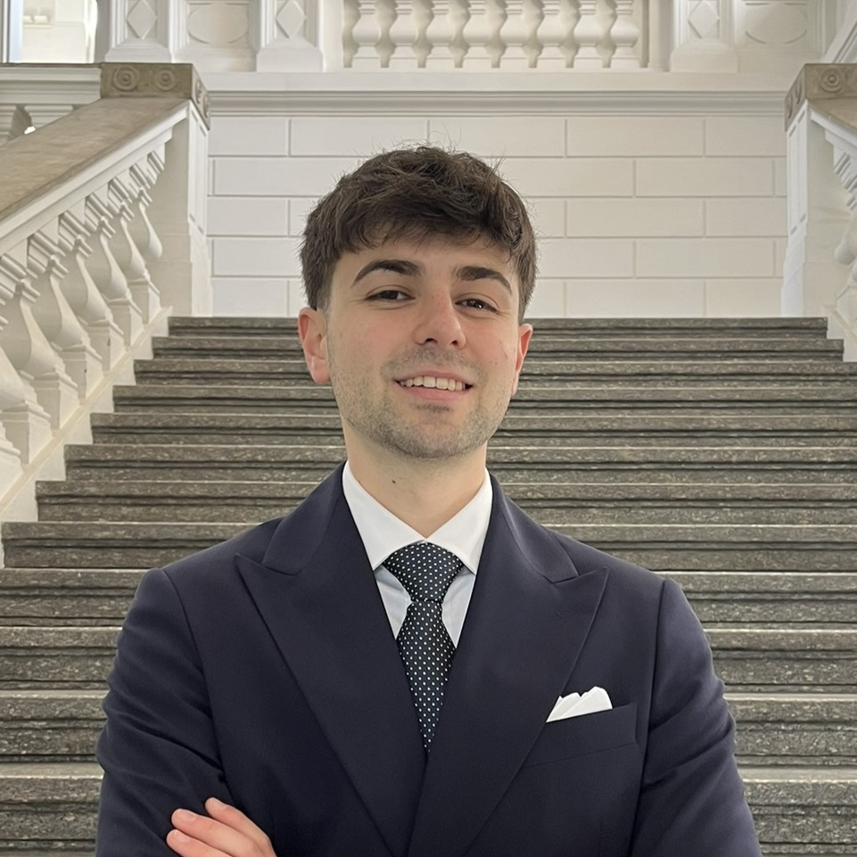

Welcome to My Page!
Hello! I'm Francesco Dettori, a PhD student in Biomedical Engineering at INRIA in Strasbourg, precisely in the MIMESIS team. My research focuses on the use of digital twins to improve simulations of therapies in human organs, precisely thermal ablation in liver cancer.
I studied Biomedical Engineering during either my bachelor and master, always at Politecnico di Milano, Italy, except for the last year of master, when I decided to begin a double degree program that is offered by Politecnico in collaboration with the University of Strasbourg. I spent an entire year in Strasbourg, France, where I gave exams and did my master thesis internship during the last semester, working for the first time at INRIA, always with MIMESIS team.
My Research Interests
My primary research interests include, but are not limited to:
- Digital Twins in Healthcare: Creating virtual replicas of human organs, patients, or even entire populations to monitor, analyze, and predict treatment outcomes.
- Medical Technology Development: Contributing to the design and improvement of innovative medical devices and diagnostic tools.
- Image-Guided Interventions: Exploring how medical imaging can be integrated with simulations for more precise surgical planning and execution.
My goal is to contribute to a future where engineering solutions empower clinicians and improve patient lives.
Current Focus
Currently, my doctoral research at INRIA is in the context of MediTwin project, started by Dassault Systemes in collaboration with INRIA, IHUs, and other companies. This involves using medical imaging data to parametrize digital twins, used to simulate thermal ablation therapies like Radiofrequency ablation, Microwave ablation, or Cryoablation, and predict their outcome as accurately as possible.